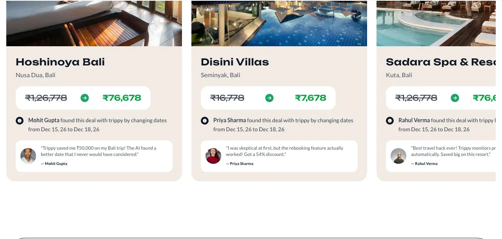
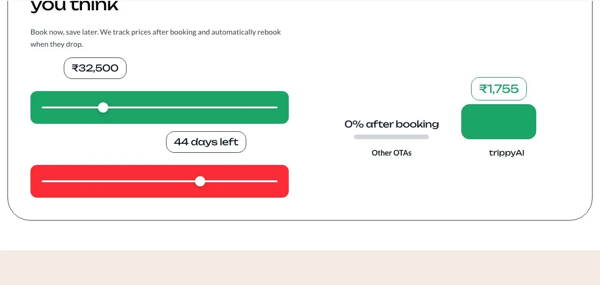
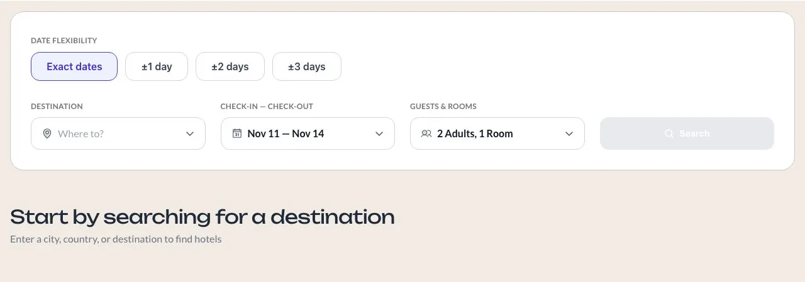
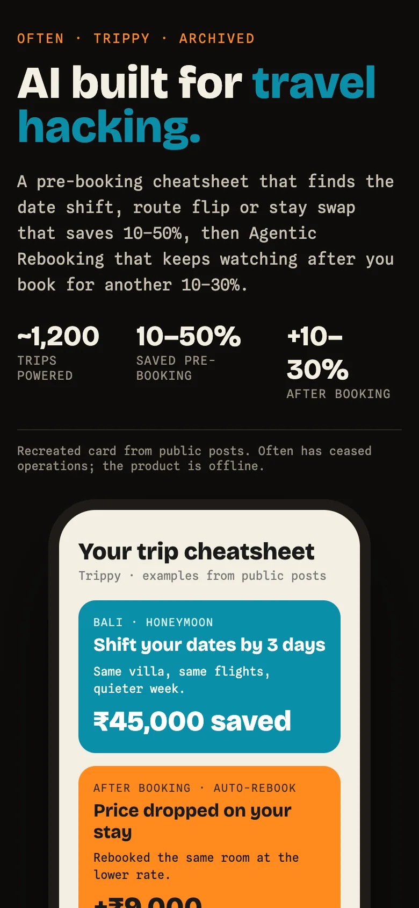

Trippy by Often · AI travel hacking
Trippy
Find hacks to get your dream hotels at steal rates: Trippy checked thousands of date and room combinations before you booked, then kept watching the price after.




How it worked
- Before you book: it searched thousands of hotel, date and room combinations and showed the cheapest way to do the same trip.
- After you book: agentic rebooking watched the price and rebooked you when it dropped, up to the free-cancellation date.
- Planning: an AI trip builder for the whole itinerary.
Where it came from
Trippy was the travel-hacking AI from Often, a travel startup in Mumbai.
What I learned
In travel, whoever controls the supply wins. And people barely use a travel app, so it never becomes a habit, and word of mouth has to spread extremely fast.
- ~1,200trips powered
- ₹3.2 crsaved by travellers, per gotrippy.ai
- up to 70%saved after booking by auto-rebook, per gotrippy.ai
Screenshots are of the live gotrippy.ai (Nov 2026). The site’s own hero video is a stock clip, so it isn’t shown here.